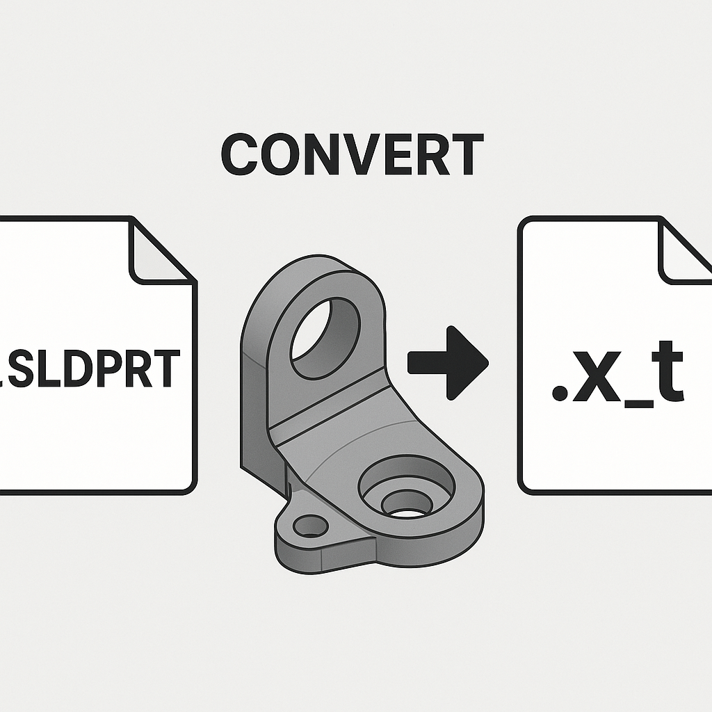

Save All Parts of an Assembly as Parasolid Files
Description
This macro opens all parts of the currently active assembly and saves each part as a Parasolid file. It simplifies the process of exporting parts from an assembly by automatically saving them in the desired format. The macro should be used when the active document is an assembly, and it will save the parts in the specified location.
System Requirements
- SolidWorks Version: SolidWorks 2014 or newer
- Operating System: Windows 7 or later
Pre-Conditions
Note
- The active document must be an assembly.
- All parts must be resolved (not in a suppressed or hidden state) to ensure successful export.
- The destination folder path must be valid and writable.
Results
Note
- All parts within the active assembly will be saved as Parasolid files in the specified folder.
- The files will be named according to the original part names and saved in the Parasolid (.X_T) format.
- A message box will be displayed if the document is not an assembly or if there is any issue during saving.
VBA Macro Code
' Disclaimer:
' The code provided should be used at your own risk.
' Blue Byte Systems Inc. assumes no responsibility for any issues or damages that may arise from using or modifying this code.
' For more information, visit [Blue Byte Systems Inc.](https://bluebyte.biz).
Option Explicit
' --------------------------------------------------------------------------
' Main subroutine to initialize the process and save parts as Parasolid files
' --------------------------------------------------------------------------
Sub main()
' Declare necessary SolidWorks objects
Dim swApp As Object ' SolidWorks application object
Dim Part As Object ' Active document object (assembly)
Dim boolstatus As Boolean ' Boolean status to capture operation results
Dim longstatus As Long, longwarnings As Long ' Long variables for capturing status and warnings
' Initialize SolidWorks application
Set swApp = Application.SldWorks
' Get the currently active document (assembly)
Set Part = swApp.ActiveDoc
' Check if there is an active document open
If Part Is Nothing Then
MsgBox "No active document found. Please open an assembly and try again.", vbCritical, "No Active Document"
Exit Sub
End If
' Check if the active document is an assembly
If Part.GetType <> swDocASSEMBLY Then
MsgBox "This macro only works on assemblies. Please open an assembly and try again.", vbCritical, "Invalid Document Type"
Exit Sub
End If
' Save the assembly as a Parasolid file (change the path as needed)
' Note: Replace the path with a dynamic path or prompt for user input if required
longstatus = Part.SaveAs3("C:\Users\pnovorolsky\Music\Para TEst\1014016.X_T", 0, 0)
' Check if the save operation was successful
If longstatus = 0 Then
MsgBox "Parasolid file saved successfully.", vbInformation, "Save Successful"
Else
MsgBox "Failed to save the Parasolid file. Please check the file path or permissions.", vbExclamation, "Save Failed"
End If
End Sub
Macro
You can download the macro from here
Customization
Need to modify the macro to meet specific requirements or integrate it with other processes? We provide custom macro development tailored to your needs. Contact us.